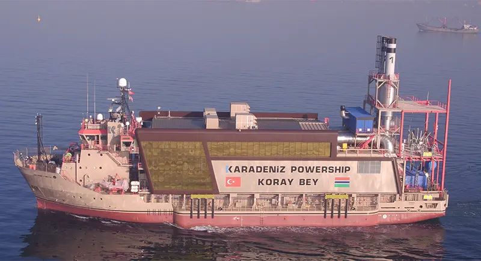

Karpowership是一家土耳其公司，特色业务是Powership浮动电站（发电船）。
2018年，冈比亚国家水电公司NAWEC和Karpowership签署协议，要求Karpowership为冈比亚国家电网提供30兆瓦电力。2018年3月，Karpowership把一艘36兆瓦的Karadeniz发电船Koray Bey开到了班珠尔近海锚地，过海底电缆接入冈比亚国家电网。
Karadeniz发电船是火力电站，使用低硫重油（HFO）发电，也能改用天然气。这些燃料由Karpowership公司自行供应，冈比亚只负责出钱买电。
看起来，冈比亚对这个方案比较满意。在2018年签的2年合同到期时，2020年又续签了2年，2022年又续签了约3年。除了冈比亚之外，Karpowership在非洲的加纳、莫桑比克等和东南亚的印度尼西亚等都有业务。